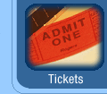

- song -
|  |
You'll find a handy form in this section to help you address your questions or comments to the right place. . I'm MoJo, and this is my Musical Mouseum -- a place where you can find the lyrics to your favorite kids' songs, send out a request for a long lost song, or maybe help somebody else find the one they're looking for. Anywhere you see this image () it means the music is included. To hear it, just click on MoJo's 'Play Song' icon (see right), which you'll find right underneath the title in the song page itself. |
Songwriter Resources Unsigned Artist Resources Song Lyrics Lyric Text How do I become a singer. . Visit the Official Singer Song merchandise marketplace. We are an artist driven web site dedicated to bringing you the newest singers and songs. Independent Singers and Songwriters are featured prominently on Singer Song.
|
Find out about those who've shaped our sound, past and present. . I direct New Song Music and I pastor New Song Fellowship, of which New Song Music is an outreach. Click the links below to review our albums for both worship and listening, sample the sounds in streaming audio and read some of the great reviews we've received. None of our artists receives any financial return at all so that all our income after expenses goes to support valuable ministries and outreaches. |
 |
. Over 70 of them appear right here on this web site. If you don't find the song you want on the menu below, be sure to explore the Lyrics Links and the Books With Song Translations that I've recommended below--maybe one of those resources will have your song. Table Of Contents If you know of additional sources, or if you have an English-language translation to a Middle Eastern song that you're willing to share on this web site, please contact me and I'll gladly add it. Songs Sung In Turkish Songs Sung In Armenian Songs Sung In Hebrew Songs Sung In Greek Songs Sung In Arabic Lyrics Links Books With Song Translations Recent Changes To This Page Important Notice. |
also look at: http://www.musicforasong.com/MFAS/AboutUs.asp?authID=1816421652